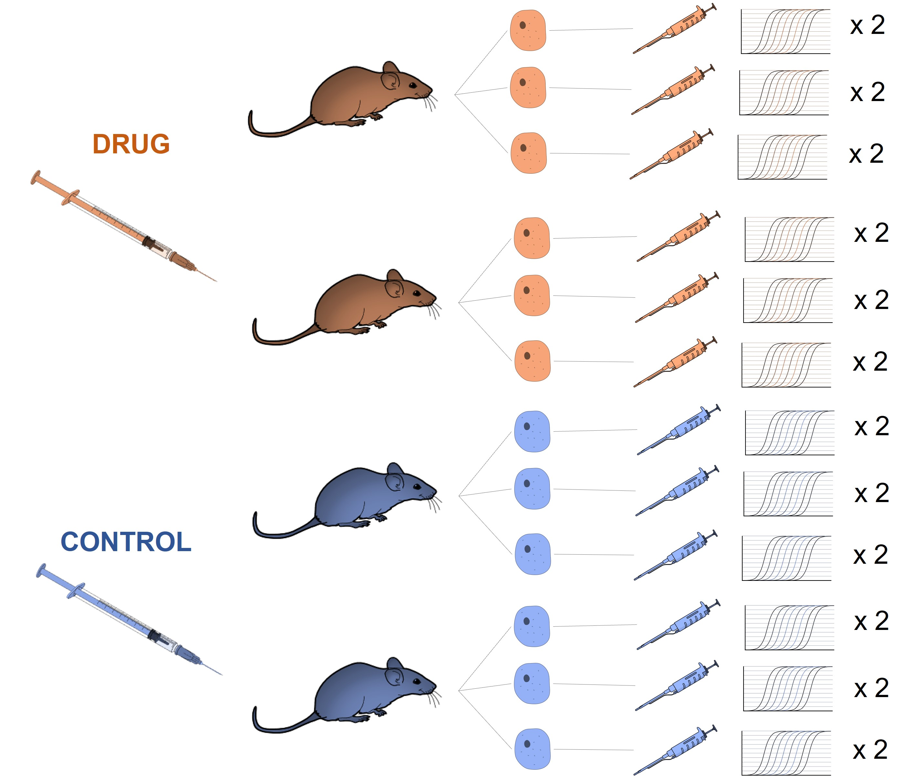
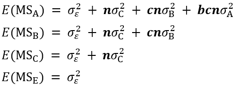

install.packages(c("ggplot2", "GAD", "lme4", "multcomp", "agricolae"))What is a nested design?
A nested design is a type of experimental design in which the levels of one factor are hierarchically nested within the levels of another factor. For example, let’s imagine that we are interested in the effect of a type of drug on the expression of a specific gene. For this we design a nested experiment with mice as experimental units (in the figure two mice per treatment), where we include a control. From each mouse we took three cells and in each one we evaluated the expression of the gene twice (technical repetitions).

As shown in the figure, our design has a hierarchical appearance.
In this type of design we distinguish between two types of factors: fixed and random. A fixed factor is one that has discrete or finite values, while a random factor can take many values. In our example the drug factor would be considered a fixed factor and the mouse, cell and repeated measurements factors would be considered random factors. Note how the random factors are similar, such as mouse and cell, but not identical to each other and these are successively nested until the fixed factor drug.
Now let’s see how we can analyze the results of this type of experimental design with the help of R code. It is important to mention that I took as a basis the publication in nature methods: Nested designs and replicated the example shown using, of course, R code. In addition, I added an extra drug and performed a multiple comparisons test to establish significant differences between the means of each treatment.
If you are interested about how I simulated the data, please take a look at the code in the data_simulation script found in the repository of this tutorial: (link).
Packages
For the visualization of the results I used ggplot2 package and for the statistical analysis I used the GAD, lme4, multicomp and agricolae packages. To install them you can run the following line of code:
Once installed, it is important not to forget to load these packages in your R session:
library(ggplot2)
library(GAD)
library(lme4)
library(multcomp)
library(agricolae)Data import
The data for this tutorial are in the repository nested-designs and you can import with the read_csv() function from readr package. If you have not installed this package, first run the following line of code:
install.packages("readr")Then we load readr in our session and import the data directly from the repository of this post:
library(readr)
mice_data <- read_csv("https://raw.githubusercontent.com/juanpa-biotech/nested-designs/master/mice_data.csv")We can use the head() function to display the first rows of our data frame:
head(mice_data)# A tibble: 6 × 5
tech_rep C B A expr
<dbl> <dbl> <dbl> <dbl> <dbl>
1 1 1 1 1 8.55
2 2 1 1 1 9.79
3 3 1 1 1 9.76
4 1 2 1 1 9.47
5 2 2 1 1 10.1
6 3 2 1 1 9.37The tech_rep column corresponds to technical replicates, A indicates the drug factor levels, B the mouse factor levels and C the cell factor levels. For this example, five mice were used for the control and for each type of drug and five cells were taken from each.The expr column has the expression level data for each treatment, mouse, cell and technical replicate.
In R Studio, it is also possible to display the data in a separate window with the View() function. Try running View(mice_data) in your console and see what happens.
Visualization of experimental results
As a first step we add three new columns to the data. If you have not installed the dplyr package, first run install.packages(dplyr):
library(dplyr)
mice_data2 <- mice_data %>%
mutate(
A = as.factor(A),
group_a = rep(c(13, 38, 63), each = 75), # Drug kind
group_b = rep(seq(3, 73, by = 5), each = 15), # Mice
group_c = rep(1:75, each = 3) # Cells
)The added columns will serve to indicate the position of some statistics (means) for each factor on the x-axis of our graph. I saved the result of this operation in a new object, so we keep the original data intact.
ggpplot2 allows us to build our visualizations by layers, so to build complex plots we simply make simple layers and “stack” them. First we generate a dot plot of the expression levels with respect to group C (cells) and add a horizontal line indicating the mean within each group of measurements:
expr_plot <- ggplot(mice_data2, aes(x = group_c, y = expr)) +
geom_point(aes(color = A), size = 1) +
stat_summary(
fun = mean, geom = "crossbar", width = 0.5, color = "black", linewidth = 0.3
)
expr_plot 
In the previous graph each group of three points represents the technical repetitions made in each cell.
Now let’s add an extra layer with red horizontal lines representing the expression means of each mouse:
expr_plot <- expr_plot +
stat_summary(
aes(x = group_b, y = expr),
fun = mean, geom = "crossbar", width = 4.5, color = "red", linewidth = 0.3
)
expr_plot
As a third layer we add horizontal lines representing the expression means for each treatment, that is, the expression results of each mouse averaged at each drug type and the control:
expr_plot <- expr_plot +
stat_summary(
aes(x = group_a, y = expr),
fun = mean, geom = "crossbar", width = 25, color = "blue", linewidth = 0.3
)
expr_plot
Finally, let’s customize the appearance of the chart a bit by modifying font and font sizes, and editing the text of each axis:
expr_plot <- expr_plot +
scale_x_continuous(breaks = c(13, 38, 63), labels = c("", "", "")) +
labs(color = " ", y = "Expression", x = " ") +
scale_color_discrete(labels = c("Control", "Drug 1", "Drug 2")) +
theme_classic() +
theme(
axis.title.y = element_text(face = "bold", color = "black", size = rel(1.2)),
axis.text.y = element_text(color = "black", size = rel(1.2))
)
expr_plot
One way to export our graph in some format is by using the ggsave() function. Try running the following line of code and see what happens:
ggsave("expr_plot.jpeg", plot = expr_plot)Inferential statistical analysis
ANOVA Table
As can be seen in our graph, there seems to be a difference between the effect of drug 2 with the other two levels of this factor (drug 1 and control). We can define if there are significant differences by means of an ANOVA table and subsequently a multiple comparisons test.
Let’s obtain the ANOVA table with the GAD package, first we have to specify the fixed and random factors:
drug <- as.fixed(mice_data$A)
mice <- as.random(mice_data$B)
cell <- as.random(mice_data$C)To fit the linear model we must take into account the relationship between our response and the previously specified factors:
data_aov <- aov(
expr ~ drug + mice:drug + cell:mice:drug,
data = mice_data
)The term mice:drug denotes the variability of mice within each treatment, and the term cell:mice:drug denotes the variability of cells within each mouse and in turn within each treatment.
To display the ANOVA table we use the gad() function:
gad(data_aov)Analysis of Variance Table
Response: expr
Df Sum Sq Mean Sq F value Pr(>F)
drug 2 743.44 371.72 12.796 0.001058 **
drug:mice 12 348.59 29.05 5.163 7.413e-06 ***
drug:mice:cell 60 337.59 5.63 11.153 < 2.2e-16 ***
Residual 150 75.67 0.50
---
Signif. codes: 0 '***' 0.001 '**' 0.01 '*' 0.05 '.' 0.1 ' ' 1The gad() function distinguishes between fixed and random effects, as well as the nested structure between these factors, so it makes corrections to calculate the F-ratios. The reason for this is that, depending on whether we are considering fixed or random effects, the expected values for the error mean squares (EM) change as follows:

In the above equations it is possible to observe the nested structure in the mean squares. Also note how for the case of treatments (\(MS_A\)) the expected values add up to the contribution to the variation of mice and cells. Therefore, it is necessary to divide \(MS_A\) by \(MS_B\) to obtain the F-ratio and infer differences between treatments.
Importantly, in the case of technical replicates the variability of this random factor is properly estimated by the mean square of the Residual term in our ANOVA table.
Estimation of the variability of each factor
When dealing with random factors, we are mainly interested in estimating their contribution to the variability of the response, as opposed to fixed factors where we are interested in estimating their effect on the population mean.
With the lme4 package we can estimate the contribution to variability of mice, cells and properly the error term (technical replicates). First we need to convert the data type in columns A, B and C into factors and then use the lmer() function as follows:
mice_data3 <- mice_data %>%
mutate(A = as.factor(A), B = as.factor(B), C = as.factor(C))
data_lme <- lmer(expr ~ 1 + A + (1|B:A) + (1|C:B:A), data = mice_data3)Note that fitting the linear model with the lmer() function requires a somewhat different syntax than that used with aov() and gad(). To show the contribution to variability of each factor we use the summary() function with the data_lme object as argument:
summary(data_lme)Linear mixed model fit by REML ['lmerMod']
Formula: expr ~ 1 + A + (1 | B:A) + (1 | C:B:A)
Data: mice_data3
REML criterion at convergence: 684.4
Scaled residuals:
Min 1Q Median 3Q Max
-2.76545 -0.53144 -0.02996 0.59495 2.20017
Random effects:
Groups Name Variance Std.Dev.
C:B:A (Intercept) 1.7073 1.3066
B:A (Intercept) 1.5615 1.2496
Residual 0.5045 0.7103
Number of obs: 225, groups: C:B:A, 75; B:A, 15
Fixed effects:
Estimate Std. Error t value
(Intercept) 10.0519 0.6224 16.151
A2 1.4654 0.8801 1.665
A3 -2.9085 0.8801 -3.305
Correlation of Fixed Effects:
(Intr) A2
A2 -0.707
A3 -0.707 0.500Under Random effects the term Residual refers to technical replicates, the term B:A to mice and the term C:B:A to cells.
Multiple comparisons
The glth() function of the multcomp package can be used to perform the multiple comparison test:
mult_drug <- glht(data_lme, linfct = mcp(A = "Tukey"))
summary(mult_drug)
Simultaneous Tests for General Linear Hypotheses
Multiple Comparisons of Means: Tukey Contrasts
Fit: lmer(formula = expr ~ 1 + A + (1 | B:A) + (1 | C:B:A), data = mice_data3)
Linear Hypotheses:
Estimate Std. Error z value Pr(>|z|)
2 - 1 == 0 1.4654 0.8801 1.665 0.2188
3 - 1 == 0 -2.9085 0.8801 -3.305 0.0027 **
3 - 2 == 0 -4.3739 0.8801 -4.970 <1e-04 ***
---
Signif. codes: 0 '***' 0.001 '**' 0.01 '*' 0.05 '.' 0.1 ' ' 1
(Adjusted p values reported -- single-step method)Alternatively or additionally it is also possible to use the HSD.test() function of the agricolae package. For this I specified the mean squared error for mice (29.05) as well as the degrees of freedom for this factor (12):
tukey_hsd <- with(mice_data, HSD.test(expr, A, DFerror = 12, MSerror = 29.05))
tukey_hsd$groups expr groups
2 11.517297 a
1 10.051919 a
3 7.143408 bAccording to the results of the above analyses, we can conclude that drug 2 significantly reduced the gene expression levels compared to drug 1 and the control.
Key points
- A nested design is a type of experimental design in which the levels of one factor are hierarchically nested within the levels of another factor.
- In this type of design, a distinction is made between fixed factors (which have discrete or finite values) and random factors (which can take many values). In the example, the drug factor was considered as fixed, while the mouse, cell and repeated measurements factors were considered random.
- It is possible to use the
ggplot2package to visualize the results of this type of design. - The
GADpackage was used to perform the analysis of variance of the results of this design. - The
lme4package was used to estimate the contribution to variability of the random factors mice, cells and technical replicates. - Two methods for performing multiple comparisons tests were described, using the
multicompandagricolaepackages.
The code on this post is licensed under the Creative Commons Attribution 4.0 International License